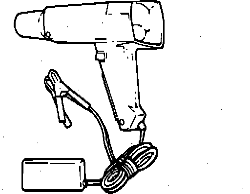

Timing Light

PURPOSE
The timing light is a specially designed strobe light, used to check the timing of ignition spark in relation to crank position and cam position.
While the timing light is connected to the number 1 cylinder spark plug, the timing light will flash each time the ignition system "fires" that plug.
The flash is used to illuminate the timing mark, which appears to stand still during illumination.
OPERATION
Follow the manufacturer's instructions for connection and operation of timing light.